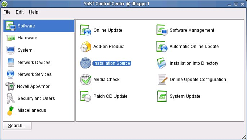
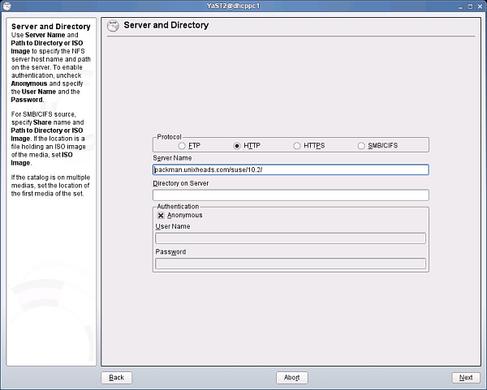
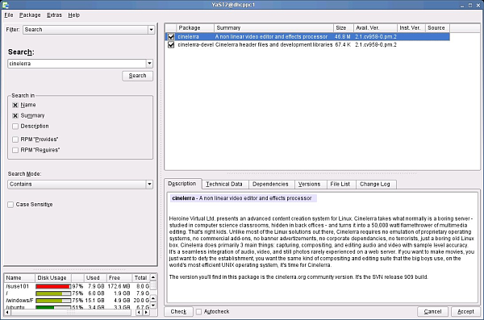
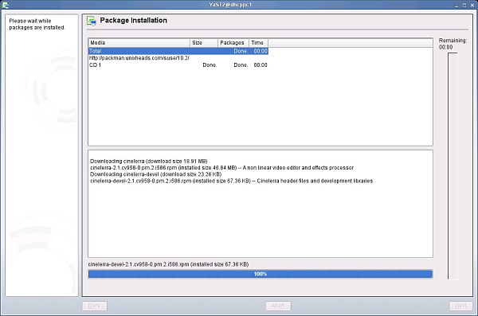

| [ << ] | [ >> ] | [Top] | [Table des matières] | [Index] | [ ? ] |
Vous trouverez ci-dessous le contenu général des paquets de Cinelerra.
Cinelerra est exigeant en terme de ressources matériel, puisque les demandes de lecture, de décodage, de lecture de la vidéo peuvent être assez pénalisantes et consommatrices de ressources. En conséquence de quoi les performances et donc la facilité d'utilisation de Cinelerra sont directement liées au format vidéo utilisé (SVCD/DV/HDV/HD/etc), à la puissance du processeur, aux vitesses des bus d'entrées/sorties, à la capacité mémoire de votre système et l'architecture de son bus vidéo. Ainsi, un système peu puissant sera suffisant pour les utilisateurs travaillant sur de l'audio uniquement ou bien sur des vidéos en basse résolution. Cependant, le même système pourra s'avérer insuffisant lors de la lecture de vidéos en plus haute résolution, comme la vidéo DV. La présence d'effets et de plusieurs pistes audio vont accentuer ces problèmes. En prenant en compte ces contraintes, voici quelques suggestions pour faire fonctionner Cinelerra :
Afin de pouvoir installer Cinelerra, vous devriez avoir une version récente de Linux avec XFree86 et un logiciel de gestion audio fonctionnant correctement. Les bibliothèques suivantes devraient aussi être installées sur votre système (liste non exhaustive) :
| 2.3.1 Processus de compilation habituel | ||
| 2.3.2 Compiler avec les symboles de débogage |
Vous pouvez installer Cinelerra CV en récupérant les sources et en les compilant vous-même. C'est la méthode à utiliser si vous désirez utiliser la version de Cinelerra CV la plus à jour.
svn checkout svn://svn.skolelinux.org/cinelerra/trunk/hvirtualsvn updatesvn checkout -r <révision>
svn://svn.skolelinux.org/cinelerra/trunk/hvirtual
cd hvirtual
autoreconf -i --force
./configure --with-buildinfo=svn/recompile./configure --help
make
Si vous désirez enregistrer dans un fichier la sortie de make, afin de pouvoir
rechercher les erreurs, vous pouvez utiliser cette commande :make 2>&1 | tee logfile
sudo make install
Note :
./configure avec l'option `--enable-mmx'. Si vous le
faites, vous devrez utiliser conjointement l'option `--without-pic',
sinon, la compilation peut échouer.
./configure --prefix=/usr --enable-x86 --enable-mmx --enable-freetype2
--with-buildinfo=svn/recompile CFLAGS='-O3 -pipe -fomit-frame-pointer
-funroll-all-loops -falign-loops=2 -falign-jumps=2 -falign-functions=2
-ffast-math -march=pentium-m -mfpmath=sse,387 -mmmx -msse'
./configure (remplacer
`xxx' par le numéro de la révision que vous compilez) :./configure prefix=/usrcd posudo make installcd /usr/local_cinelerra/r960./cinelerra_r960
Lorsque Cinelerra CV plante, on peut le compiler avec les symboles de débogage et le lancer depuis gdb. Les informations affichées par gdb sont beaucoup plus détaillées et aideront les développeurs à résoudre les bogues plus rapidement.
D'abord, récupérez les sources comme d'habitude. Ensuite, lancez les commandes
suivantes :
cd hvirtual
nice -19 autoreconf -i --force
mkdir ../hvdbg
cd ../hvdbg
nice -19 ../hvirtual/configure CXXFLAGS='-O0 -g' CFLAGS='-O0 -g'
--with-buildinfo=svn/recompile
cd quicktime/ffmpeg
nice -19 make CFLAGS='-O3'
cd ../..
nice -19 make
nice -19 make install
Voir la section Signaler des bogues, pour avoir plus d'informations concernant l'exécution de Cinelerra depuis gdb.
La manière la plus simple de lancer Cinelerra est de lancer la commande
/usr/bin/cinelerra
Les options en ligne de commande sont aussi disponibles en tapant
cinelerra -h. Ces options sont décrites dans d'autres sections
ci-dessous. Pour effectuer le rendu en ligne de commande Voir la section Le rendu de fichiers.
Si l'erreur suivante s'affiche lorsque vous lancez Cinelerra pour la première fois :
WARNING:/proc/sys/kernel/shmmax is 0x2000000, which is too low}
Voir la section Libérer davantage de mémoire partagée, pour plus d'information.
| 2.5.1 Binaires Debian | ||
| 2.5.2 Prérequis pour Debian |
Andraz TORI maintient les règles de constructions pour Debian Sid. Il construit également des paquets binaires .deb pour Sid. Ils sont construits depuis les versions SVN non officielles. Les paquets pour Debian Sid se trouvent ici :
deb http://www.kiberpipa.org/~minmax/cinelerra/builds/sid/ ./
deb http://www.kiberpipa.org/~minmax/cinelerra/builds/pentium4/ ./
deb http://www.kiberpipa.org/~minmax/cinelerra/builds/pentiumm/ ./
deb http://www.kiberpipa.org/~minmax/cinelerra/builds/athlonxp/ ./
deb http://labbs.net/~vale/debian ./
Note : Si Cinelerra retourne l'erreur suivante :
cinelerra: relocation error: /usr/lib/libavcodec.so.0.4.8: undefined
symbol: faacDecOpen
Vous pouvez résoudre ce problème en entrant la commande suivante en tant
qu'administrateur (root) :
apt-get install --reinstall libfaad2-0=2.0.0-0.5
Vous aurez besoin de certains logiciels prérequis qui ne se trouvent pas dans
les dépôts officiels de Debian. Vous pouvez ajouter à votre fichier
`/etc/apt/sources.list' la ligne suivante qui est le dépôt de Christian
Marillat :
deb http://www.debian-multimedia.org/ sid main
Pour pouvoir utiliser ce miroir, vous devrez ajouter la clé gpg de Marillat à
votre trousseau de clés gpg :
gpg --keyserver hkp://wwwkeys.eu.pgp.net --recv-keys 1F41B907
gpg --armor --export 1F41B907 | sudo apt-key add -
Si vous n'utilisez pas sudo, faites ce qui suit en tant qu'administrateur
(root) :
gpg --armor --export 1F41B907 | apt-key add -
MUZZOL a fabriqué des paquets pour Cinelerra sous Ubuntu Edgy. Pour réaliser l'installation au moyen du gestionnaire de paquets Synaptic, allez dans Configuration -> Dépôts. Dans la fenêtre de gestion des paquets, cliquez sur le bouton Ajouter et renseignez les dépôts suivants :
deb http://www.kiberpipa.org/~muzzol/cinelerra/edgy-i386/ ./
En cliquant sur Ajouter le dépôt vous verrez le nouveau dépôt activé dans la fenêtre de gestion des paquets. Vous pouvez aussi ajouter directement les lignes suivantes dans le fichier `/etc/apt/sources.list' :
deb http://www.kiberpipa.org/~muzzol/cinelerra/edgy-i386/ ./
Vous verrez alors apparaître Cinelerra dans Synaptic.
Pour installer Cinelerra avec GDebi, consultez cette page :
http://www.kiberpipa.org/~muzzol/cinelerra/edgy-i386/.
Cliquez sur le lien cinelerra_2.1.0+svn20070109-0ubuntu1_i386.deb. Une
fenêtre de dialogue va alors s'ouvrir vous demandant de confirmer votre
intention d'ouvrir ce fichier avec GDebi. Si durant l'installation vous
rencontrez des problèmes de dépendances non satisfaites, essayez d'installer
les librairies manquantes en utilisant la même méthode, et la même page
internet.
Valentina MESSERI a aussi construit des paquets pour Ubuntu Edgy :
Pour Ubuntu Edgy:
deb http://giss.tv/~vale/ubuntu32 ./ deb-src http://giss.tv/~vale/ubuntu32 ./
Pour Ubuntu Edgy AMD64:
deb http://giss.tv/~vale/ubuntu64 ./ deb-src http://giss.tv/~vale/ubuntu64 ./
Les personnes désirant compiler Cinelerra peuvent consulter le tutoriel dédié à
l'installation de Cinelerra sur Ubuntu (en anglais) à cet endroit :
http://www.ubuntuforums.org/showthread.php?t=320701&highlight=cinelerra
L'installation sur Gentoo GNU/Linux est assez simple. Lancez simplement :
emerge cinelerra-cvs
avec le compte root et l'installation devrait s'effectuer sans problème. Notez que vous pouvez avoir besoin de placer Cinelerra dans le fichier `/etc/portage/package.keywords' afin de pouvoir l'utiliser :
echo "=media-video/cinelerra-cvs-20061020" >> /etc/portage/package.keywords
Voyez http://www.gentoo.org/doc/en/handbook/handbook-x86.xml?part=3&chap=3 pour plus d'information.
Note: L'ebuild Gentoo media-video/cinelerra-cvs-20061020 ne possède pas d'icônes de modes d'édition. Voir The insertion point, pour plus d'information.
L'installation pour Gentoo GNU/Linux est aisée. Lancez simplement :
emerge cinelerra
en tant qu'administrateur et il devrait s'installer et fonctionner sans
problème.
Vous pouvez essayer et utiliser Cinelerra sur votre ordinateur sans avoir à l'installer sur le disque-dur. Ceci est rendu possible grâce aux Live CD, qui sont des distributions GNU/Linux démarrant à partir d'un CD, sans qu'il soit nécessaire d'installer quoi que ce soit sur l'ordinateur. Voici quelques distributions Live CD qui contiennent Cinelerra :
Knoppix est un CD amorçable comportant une collection de logiciels GNU/Linux, une détection automatique du matériel, et la gestion de nombreuses cartes graphiques, cartes son, périphériques SCSI, USB ou autres. Knoppix peut être utilisé comme démonstration de GNU/Linux, comme CD éducatif, comme système de dépannage, ou adapté et utilisé comme plateforme pour des démonstrations de logiciels commerciaux. Il n'est pas nécessaire d'installer Knoppix sur le disque dur. (source : http://www.knoppix.org)
Distributions Knoppix connues incluant Cinelerra :
Cinelerra est inclu dans le dépôt Freshrpms à l'adresse http://freshrpms.net. La méthode la plus simple pour installer des paquets depuis Freshrpms est d'inclure ce dépôt dans la configuration de yum. Vérifiez bien que le dépôt "Extras" de Fedora est activé. C'est le cas par défaut pour Fedora 5 et 6, et les dépôts Core et Extras ne font plus qu'un pour Fedora 7.
Sous Fedora 6, tapez depuis le compte root :
rpm -ivh http://ftp.freshrpms.net/pub/freshrpms/fedora/linux/6/\ freshrpms-release/freshrpms-release-1.1-1.fc.noarch.rpm
Sous Fedora 5, tapez :
rpm -ivh http://ftp.freshrpms.net/pub/freshrpms/fedora/linux/5/\ freshrpms-release/freshrpms-release-1.1-1.fc.noarch.rpm
Ensuite, tapez :
yum -y install cinelerra
afin de récupérer et installer Cinelerra et ses dépendances, y compris ffmpeg et mjpegtools. Si cela ne fonctionne pas, examinez le fichier `/etc/yum.conf' et vérifiez que le paramétrage pour Freshrpms et bien récupéré depuis `/etc/yum.repos.d'.
Notes :
Des paquets Cinelerra pour Mandriva sont mis à disposition par PLF et prêts à être installés. Lisez la page http://plf.zarb.org/packages.php pour plus d'information.
Rafael DINIZ construit des paquets Slackware de Cinelerra.
Des RPM pour SuSE 9 sont construit depuis les sources SVN par Kevin BROSIUS, ils sont disponibles à http://cin.kevb.net/files/RPM/
Des RPMs pour OpenSUSE 10.1 et 10.2, architecture i586 et x86_64, sont construits à partir des sources SVN par Leon FREITAG chez Packman. Ils sont disponibles à http://packman.links2linux.org/package/cinelerra/16413.
Les packages RPM peuvent être installés avec le compte root dans une console en utilisant cette commande :
rpm -Uvh package_name.rpm
L'exemple qui suit montre quatre copies d'écrans d'installation graphique de Cinelerra sur OpenSUSE 10.2 i586 en utilisant YaST2. Tout d'abord en ajoutant le répertoire YaST2 de Packman aux sources d'installation, et ensuite en ajoutant le paquet d'installation avec le gestionnaire de logiciels YaST2.
Démarrez le centre de contrôle YaST sur OpenSUSE 10.2 et entrez le mot de passe de root lorsqu'on vous le demande :

Démarrez l'outil YaST2 d'installation des sources, et sélectionnez le protocole HTTP et ajoutez le nom du serveur pour Packman, comme indiqué. La synchronisation avec Zenworks peut prendre quelque temps, attendez que cela soit terminé.

Démarrez le gestionnaire de logiciel de YaST2. Entrez "Cinelerra" dans le champs de recherche situé à gauche et ensuite cochez les paquets Cinelerra situés dans la fenêtre de droite. Si une ancienne version de Cinelerra est installée, elle est indiquée avec une icône représentant un cadenas. Effacez-la ou bien tentez une mise à jour.

Cliquez sur Accepter pour lancer l'installation du paquet, puis cliquez sur Suivant pour terminer l'installation.

FIXME
| [ << ] | [ >> ] | [Top] | [Table des matières] | [Index] | [ ? ] |
Ce document a été généré par Nicolas Maufrais le 13 Mars 2007 en utilisant texi2html 1.76.